Sucré (207 recettes)
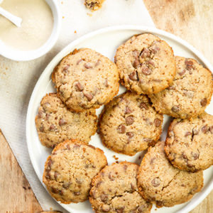
1 avisRecettes VégétariennesSucré
Cookies crème de sésame et pépites de chocolat {sans beurre ni œufs}
 11 avis
11 avis
Sucré
Gaufres liégeoises
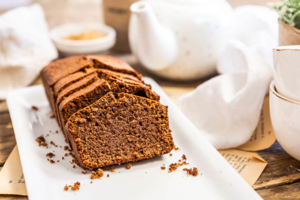
7 avisRecettes VégétariennesSucré
Gâteau au chocolat à l’huile d’olive
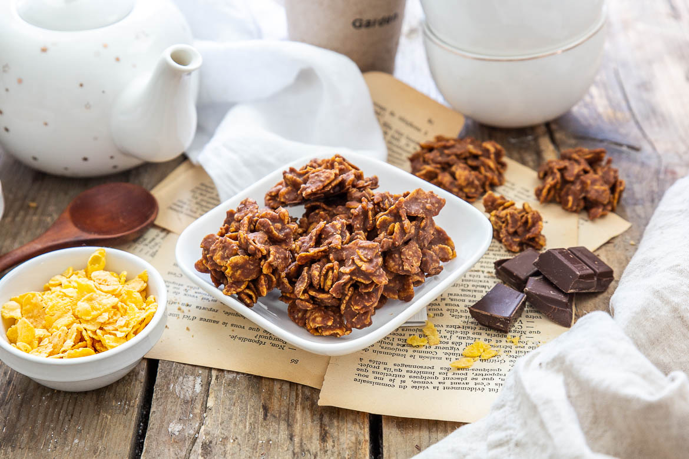
5 avisSucré
Roses des sables {chocolat au lait noix de coco}
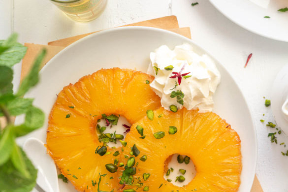
3 avisCollab Grand Frais®Recettes VégétariennesSucré
Ananas rôtis
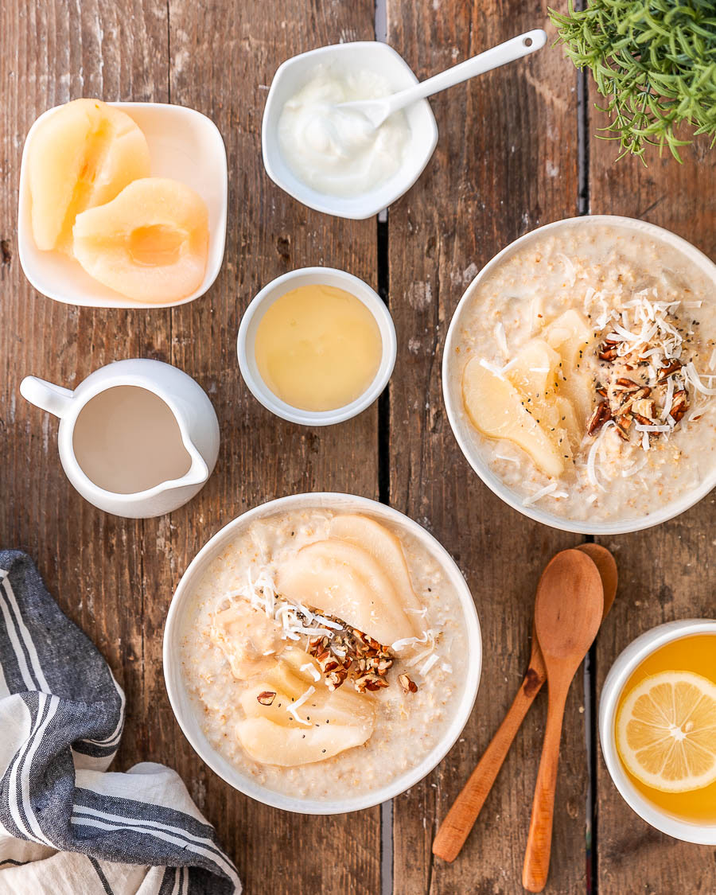
3 avisBrunchRecettes VégétariennesSucré
Porridge poire coco
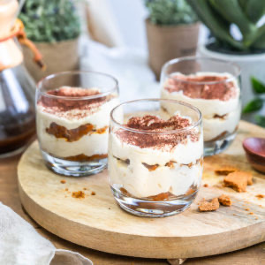
8 avisRecettes VégétariennesSucré
Tiramisu aux spéculoos
 8 avis
8 avis
SucréTartes sucrées
Tarte à l’ananas (meringuée)
 9 avis
9 avis
BoulangeBrunchDesserts du monde
Kanelbullar, brioche Suédoise à la cannelle
2 avis
NoëlRecettes de fêtesSucré
Eton mess poires et crème de marrons
4 avis
Gâteaux et Layer cakesRecettes VégétariennesSucré
Cake poire chocolat
6 avis
BrunchDesserts du mondeRecettes Végétariennes
Brioche roulée au chocolat miel et amandes
 3 avis
3 avis
HalloweenRecettes VégétariennesSucré
Cookies au potiron
2 avis
Recettes VégétariennesSucréTartes sucrées
Tartelettes aux figues et calisson
5 avis
Recettes VégétariennesSucré
Barre de céréales aux pruneaux d’Agen et chocolat
17 avis
Gâteaux et Layer cakesRecettes VégétariennesSucré
Torta caprese {Fondant au chocolat et aux amandes}
 7 avis
7 avis
BrunchChandeleurDesserts du monde
Pancakes légers « super healthy »
5 avis
Recettes VégétariennesSucréTartes sucrées
Tartelettes aux pruneaux d’Agen
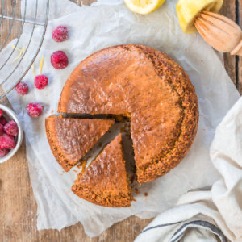
6 avisGâteaux et Layer cakesSucré
Gâteau au yaourt au citron
1 avis
CupcakesCupcakes, cake pops & coNoël
Cupcakes citron et Calisson
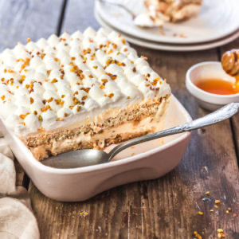
19 avisBrunchDesserts du mondeRecettes Végétariennes
Tiramisu au nougat blanc
7 avis
Recettes VégétariennesSucré
Frozen yogurt à la banane
5 avis
Recettes VégétariennesSucréTartes sucrées
Fantastik chocolat coco
18 avis
Recettes VégétariennesSucré
Cookies paléo aux pépites de chocolat
6 avis
Recettes VégétariennesSucré
Trifle Framboise et citron
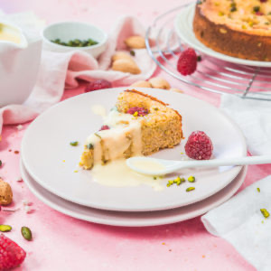
18 avisGâteaux et Layer cakesRecettes VégétariennesSucré
Gâteau fondant framboises et pistaches
2 avis
SucréTartes sucrées
Tartelettes banane chocolat
22 avis
Gâteaux et Layer cakesRecettes VégétariennesSucré
Brownie aux haricots rouges
4 avis
Recettes VégétariennesSucréTartes sucrées
Tarte pommes poires et crème de calisson
2 avis
Sucré
Verrine de mangue, mascarpone, vanille et petit feuilleté caramélisé
22 avis
CupcakesCupcakes, cake pops & coPâques
Cupcakes Schokobons
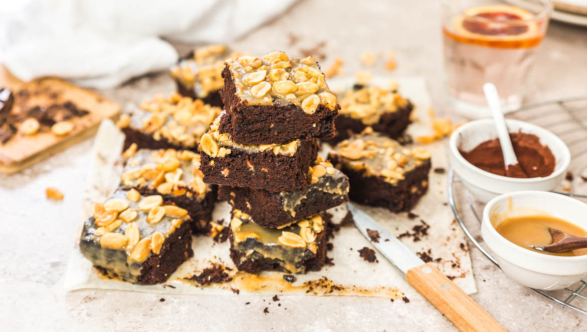
8 avisDesserts du mondeGâteaux et Layer cakesRecettes Végétariennes
Brownies au chocolat et caramel beurre salé
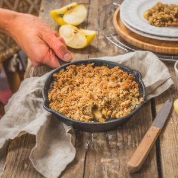
6 avisDesserts du mondeGâteaux et Layer cakesRecettes Végétariennes
Crumble pommes banane et crème de marron
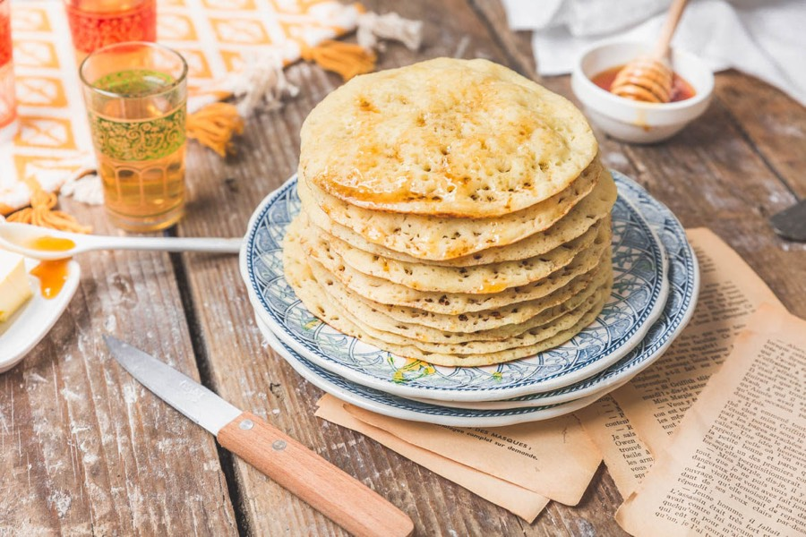
26 avisBrunchChandeleurDesserts du monde
Baghrirs, crêpes mille trous
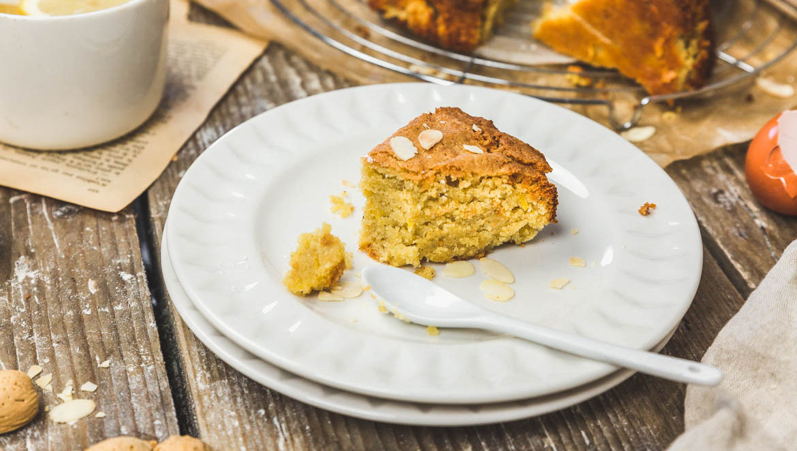
21 avisGâteaux et Layer cakesRecettes VégétariennesRepas du monde
Le namandier ou gâteau aux amandes
 13 avis
13 avis
ChandeleurGâteaux et Layer cakesRecettes Végétariennes
Gâteau de crêpes framboises et calisson
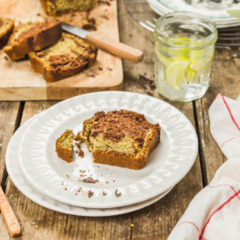
8 avisGâteaux et Layer cakesRecettes VégétariennesSucré
Gâteau marbré chocolat matcha
 17 avis
17 avis
Gâteaux et Layer cakesPâquesRecettes Végétariennes
Madeleine au chocolat
 4 avis
4 avis
BrunchNoëlPâques
Mousse au chocolat
11 avis
Desserts du mondeNoëlRecettes Végétariennes
Les Mantecaos (ou Montecaos)
 13 avis
13 avis
BoissonsBrunchRecettes Végétariennes
Chocolat chaud sans lactose
7 avis
Recettes VégétariennesSucréTartes sucrées
Tarte fine aux pommes
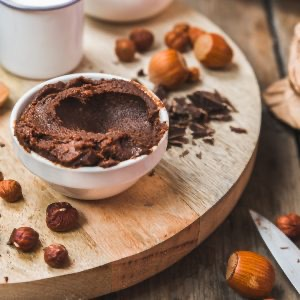
52 avisBrunchSucré
Pâte a tartiner rapide
8 avis
Gâteaux et Layer cakesNoëlSucré
Macarons menthe chocolat
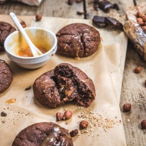
4 avisGâteaux et Layer cakesSucré
Cookies au chocolat noisettes et caramel
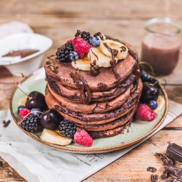
13 avisBrunchSucré
Pancakes au chocolat
 11 avis
11 avis
BoissonsBrunchRepas Light
Smoothie bowl sans lactose mangue ananas
 8 avis
8 avis
BrunchSucré
Pêches rôties au miel
9 avis
BrunchChandeleurSaint-Valentin
Brioche perdue au chocolat
 13 avis
13 avis
BoissonsSucré
Milkshake banane chocolat
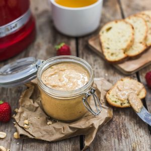
12 avisBrunchIngrédients & coSucré
Beurre de cacahuètes maison
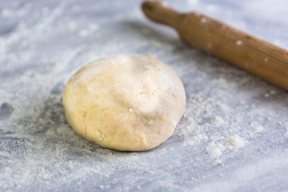
4 avisSucréTartes sucrées
Pâte brisée sucrée
11 avis
SucréTartes sucrées
Tarte abricot rhubarbe
20 avis
Gâteaux et Layer cakesSucré
Cheesecake framboises pistache
6 avis
Sucré
Yaourt Glacé à la fraise
13 avis
SucréTartes sucrées
Tarte aux fraises
 1 avis
1 avis
BrunchSucré
Granola aux amandes
18 avis
Desserts du mondeSucré
Panna cotta au citron
 5 avis
5 avis
Gâteaux et Layer cakesNoëlPâques
Gâteau au chocolat au lait aux fruits
17 avis
PâquesSucré
Eton mess poire chocolat
11 avis
ChandeleurSucré
La recette du lemon curd
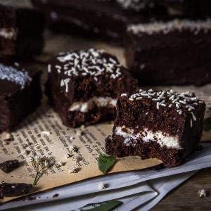
30 avisGâteaux et Layer cakesSucré
La recette des Kinder Delice
 20 avis
20 avis
BrunchGâteaux et Layer cakesSucré
La recette du banana bread (cake à la banane)
 18 avis
18 avis
BrunchPâquesSucré
Chaussons aux poires amandes chocolat
 19 avis
19 avis
NoëlSaint-ValentinSucré
Tarte au citron meringuée
5 avis
NoëlSaint-ValentinSucré
Dômes de mousse
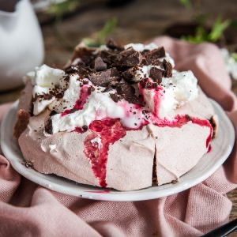
12 avisDesserts du mondeGâteaux et Layer cakesNoël
Pavlova au chocolat
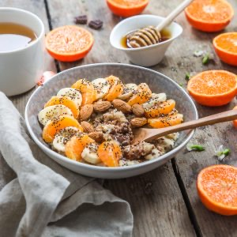
16 avisBrunchRepas LightSucré
Porridge mandarine chocolat
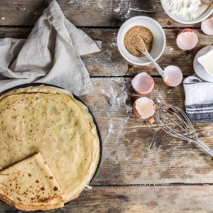
14 avisBrunchChandeleurSucré
Pâte à crêpes
 3 avis
3 avis
BoissonsRepas LightSucré
Smoothie bowl kiwi banane épinard
 22 avis
22 avis
Sucré
Cookies au thé matcha et chocolat blanc
 27 avis
27 avis
BrunchChandeleurDesserts du monde
Migliaccioli
20 avis
BoulangeBrunchNoël
Brioche étoile au chocolat
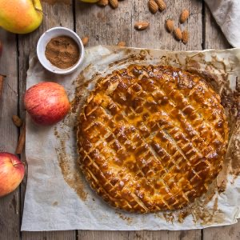
18 avisGâteaux et Layer cakesSucréTartes sucrées
Galette des rois à la pomme
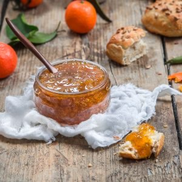
21 avisBrunchSucré
Confiture de Clémentines (corse)
12 avis
Gâteaux et Layer cakesSucréTartes sucrées
Mini galettes amande et mangue
 21 avis
21 avis
Gâteaux et Layer cakesNoëlSucré
Bûche chocolat caramel
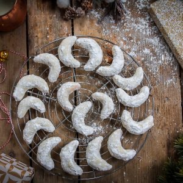
13 avisGâteaux et Layer cakesNoëlSucré
Vanille Kipferl
 23 avis
23 avis
Gâteaux et Layer cakesNoëlSucré
Bûche citron framboise
21 avis
Gâteaux et Layer cakesNoëlSucré
Crinkles au chocolat
 15 avis
15 avis
NoëlSucréTartes sucrées
Pumpkin pie ou tarte à la citrouille
15 avis
Gâteaux et Layer cakesNoëlSucré
Bundt cake aux amandes et thé de Noël
 38 avis
38 avis
Gâteaux et Layer cakesSucré
Banoffee pie
12 avis
Desserts du mondeSucré
Cookies au chocolat et beurre de cacahuète
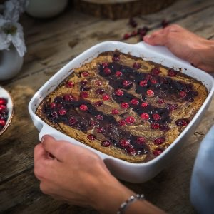
26 avisGâteaux et Layer cakesSucré
Brownies au beurre de cacahuète
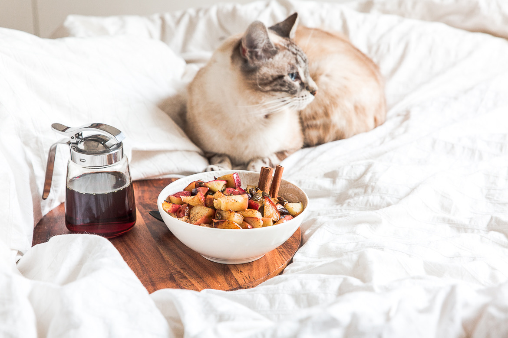
23 avisBrunchSucré
Porridge pomme cannelle
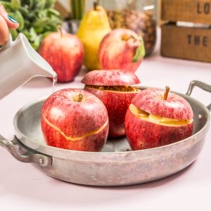
17 avisSucré
Pommes au four au caramel beurre salé
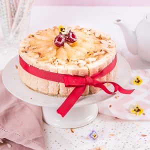
13 avisGâteaux et Layer cakesNoëlSucré
Charlotte aux poires
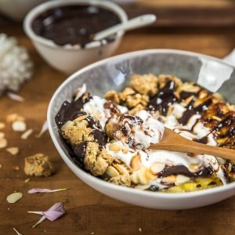
20 avisBrunchRepas LightSucré
Bananes rôties cookies aux flocons d’avoine et chocolat
 15 avis
15 avis
Gâteaux et Layer cakesSucré
Cake au citron et framboises
 38 avis
38 avis
Desserts du mondeSucré
Tiramisu au chocolat
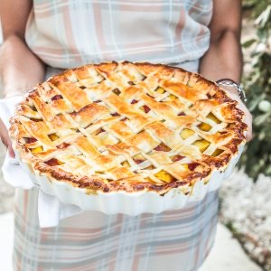
27 avisSucréTartes sucrées
Tarte aux pêches et framboises
 5 avis
5 avis
SucréTartes sucrées
Tarte quadrillée aux mûres
15 avis
Sucré
Cookies cranberries et chocolat
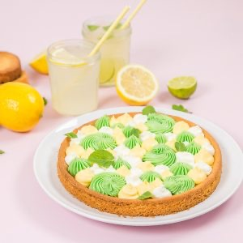
14 avisSucréTartes sucrées
Tarte aux deux citrons
 7 avis
7 avis
BoissonsSaléSucré
Gaspacho à la pastèque
23 avis
BrunchChandeleurSucré
Crêpes perdues
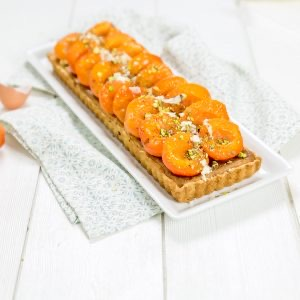
18 avisSucréTartes sucrées
Tarte abricots pistache
 8 avis
8 avis
Desserts du mondeSucréTartes sucrées
Key lime pie
 11 avis
11 avis
BoissonsBrunchRepas Light
Smoothie bowl chocolat
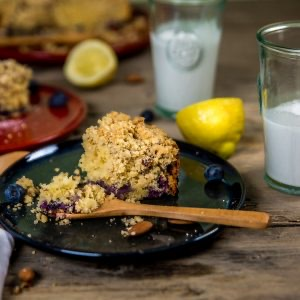
9 avisGâteaux et Layer cakesSucré
Crumbcake myrtilles citron
 12 avis
12 avis
BrunchSaladeSucré
Salade de fraises menthe et citron
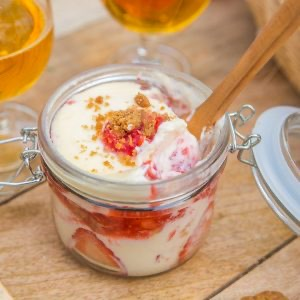
33 avisGâteaux et Layer cakesSucré
Tiramisu fraises spéculoos
 26 avis
26 avis
Gâteaux et Layer cakesSucré
Cheesecakes spéculoos framboises et fraises
21 avis
SucréTartes sucrées
Tartelettes aux fraises
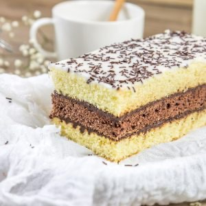
114 avisGâteaux et Layer cakesSucré
Napolitain maison
 62 avis
62 avis
Gâteaux et Layer cakesSucréTartes sucrées
Fantastik fraises citron basilic
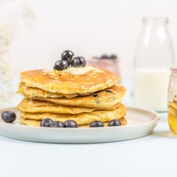
51 avisBrunchSucré
La recette de pancakes
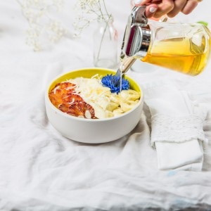
17 avisBrunchRepas LightSucré
Porridge banane orange sanguine
 71 avis
71 avis
BoulangeBrunchDesserts du monde
La mouna
45 avis
Desserts du mondeFoodista ChallengeSucré
Harisseh
21 avis
BrunchPâquesSucré
Cheesecake de Pâques comme un œuf à la coque
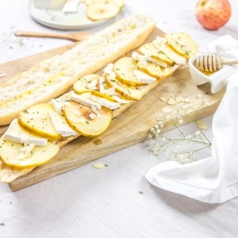
17 avisBrunchSaléSandwiches
Tartines aux pommes et au brie
 29 avis
29 avis
BoissonsNoëlSucré
Chocolat chaud maison
 13 avis
13 avis
SucréTartes sucrées
Tarte aux pommes et caramel beurre salé
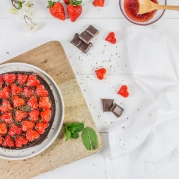
15 avisGâteaux et Layer cakesSaint-ValentinSucré
Fondant au chocolat
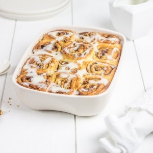
67 avisBoulangeBrunchDesserts du monde
Cinnamon rolls
 13 avis
13 avis
BrunchChandeleurSucré
Crêpes au chocolat
 3 avis
3 avis
BrunchChandeleurSucré
Les crêpes Suzette
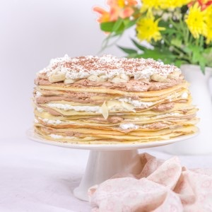
25 avisChandeleurGâteaux et Layer cakesSucré
Gâteau de crêpes
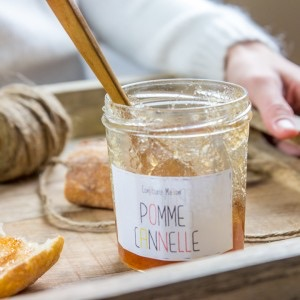
27 avisBrunchSucré
Confiture pomme cannelle
 23 avis
23 avis
BrunchSaint-ValentinSucré
Pop-tarts
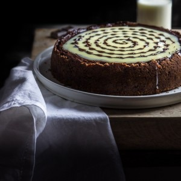
36 avisGâteaux et Layer cakesSaint-ValentinSucré
Cheesecake stracciatella
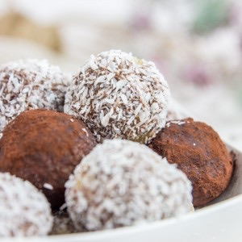
12 avisBrunchNoëlRepas Light
Energy balls
25 avis
Gâteaux et Layer cakesNoëlSucré
Gâteau de Noël comme un paquet cadeau
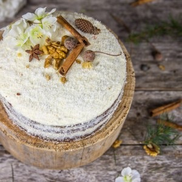
65 avisGâteaux et Layer cakesNoëlSucré
Le carrot cake
 19 avis
19 avis
Desserts du mondeGâteaux et Layer cakesNoël
Pavlova aux fruits rouges pour Noël
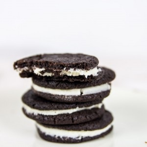
50 avisBrunchDesserts du mondeSucré
Recette des Oreo maison
38 avis
BoulangeBrunchDesserts du monde
La recette des Donuts
26 avis
BrunchSaint-ValentinSucré
Les gaufres de Christophe Michalak
 15 avis
15 avis
Gâteaux et Layer cakesHalloweenRecettes de fêtes
Cheesecake in a jar à l’Oreo
20 avis
Cake popsHalloweenSucré
Cake pops sorcières d’Halloween avec moule à cake pops
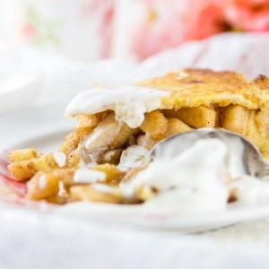
49 avisDesserts du mondeFoodista ChallengeSucré
Apple pie, la tarte aux pommes à l’américaine
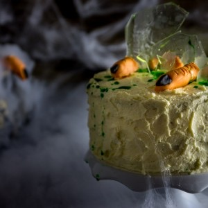
37 avisGâteaux et Layer cakesHalloweenSucré
Gâteau d’Halloween
100 avis
BrunchSucré
Pâte à tartiner de Christophe Michalak
 61 avis
61 avis
Foodista ChallengeGâteaux et Layer cakesNoël
Choux craquelin de Michalak
69 avis
Gâteaux et Layer cakesSucré
Pinata cake
 12 avis
12 avis
BoissonsBrunchSucré
Chia smoothie fraise banane
15 avis
CupcakesCupcakes, cake pops & coSucré
Cupcakes chocolat fraise
36 avis
Foodista ChallengeSucréTartes sucrées
Tarte fraise citron
30 avis
CupcakesCupcakes, cake pops & coSucré
Cucpake citron coco
 38 avis
38 avis
Desserts du mondeNoëlSucré
Kakor chokladflarn
 26 avis
26 avis
BrunchSaint-ValentinSucré
Pancakes ricotta
26 avis
Foodista ChallengeSucré
Esquimaux coco mangue
44 avis
Gâteaux et Layer cakesSucréTartes sucrées
Tarte rustique abricots et amandes
40 avis
Gâteaux et Layer cakesSucré
Clafoutis aux cerises
25 avis
Gâteaux et Layer cakesSucré
Fraisier pistache
 29 avis
29 avis
BoissonsSucré
Comment faire un bubble tea
 49 avis
49 avis
Foodista ChallengeGâteaux et Layer cakesSucré
Gâteau marbré façon savane
36 avis
Gâteaux et Layer cakesSucré
Macaron maison meringue italienne
30 avis
Desserts du mondeSucré
Eton mess
 56 avis
56 avis
BoissonsDesserts du mondeSucré
Lassi framboise cardamome et fleur d’oranger
41 avis
Desserts du mondeGâteaux et Layer cakesSucré
Banana bread au chocolat
34 avis
Desserts du mondeSucré
Pavlova fraise rhubarbe
34 avis
Gâteaux et Layer cakesSucré
Gâteau super fondant au chocolat avec une cuisson au bain marie
 99 avis
99 avis
Desserts du mondeSucré
Americain cookies « presque » comme les cookies de levain bakery
71 avis
PâquesRecettes de fêtesSucré
Oeufs de pâques chocolat au lait et mousse de framboise
35 avis
SucréTartes sucrées
Des toutes mimis minis tartelettes fraise basilic
27 avis
BrunchRepas LightSucré
Porridge framboise amande et lait d’amande
58 avis
Desserts du mondeSucré
Mia Bougatsa comme en Grèce
44 avis
Gâteaux et Layer cakesSucréTartes sucrées
Tarte framboise pistache pour un dessert gourmand et léger
64 avis
Gâteaux et Layer cakesSucré
Mini cheesecake Oreo sans cuisson
38 avis
Gâteaux et Layer cakesSucré
Gâteau en pâte à sucre chocolat framboise
56 avis
CupcakesCupcakes, cake pops & coFoodista Challenge
Cupcake tagada pour un goûter ultra girly!
 38 avis
38 avis
SucréTartes sucrées
Tarte aux poires chocolat et crème d’amande façon frangipane
48 avis
Desserts du mondeRecettes de fêtesSaint-Valentin
Panna cotta chocolat blanc et clémentines corses
89 avis
Recettes de fêtesSaint-ValentinSucré
Un chamallow tout rose et une guimauve toute blanche
59 avis
CupcakesCupcakes, cake pops & coSucré
Cupcake speculoos caramel au beurre salé
 44 avis
44 avis
Ingrédients & coSucré
Comment réussir « à coup sûr » son caramel beurre salé
78 avis
Desserts du mondeSucré
Cigares aux amandes et à la pistache arrosés de sirop de miel
14 avis
Gâteaux et Layer cakesNoëlRecettes de fêtes
Profiteroles au chocolat
23 avis
CupcakesCupcakes, cake pops & coNoël
Cupcakes Ferrero Rocher Nutella
43 avis
Desserts du mondeFoodista ChallengeNoël
Riz au lait finlandais de Noël: le Riisipuuro
24 avis
NoëlRecettes de fêtesSucré
Sablés de Noël
85 avis
Cake popsCupcakes, cake pops & coNoël
Cake pops de Noël
16 avis
BrunchSucré
Croissant Nutella tout mini et tout mimi
49 avis
Desserts du mondeNoëlSucré
Strudel aux pommes amandes et cannelle
 38 avis
38 avis
Desserts du mondeNoëlSucré
L’authentique recette du Kouglof
34 avis
CupcakesCupcakes, cake pops & coHalloween
Cupcakes Halloween
20 avis
Cake popsCupcakes, cake pops & coHalloween
Cake Pops Halloween
98 avis
CupcakesCupcakes, cake pops & coSucré
Bouquet cupcakes de la mariée {« YES I DO »}
73 avis
Foodista ChallengeGâteaux et Layer cakesSucré
Layer Cake chocolat noisettes pour un goûter d’automne
 12 avis
12 avis
BoissonsSucré
Green smoothie ma boisson vitaminée du moment
17 avis
BrunchSucré
Granola Homemade
61 avis
Desserts du mondeSucré
L'authentique Knafeh
33 avis
Gâteaux et Layer cakesSucré
Gâteau au chocolat sans beurre
55 avis
CupcakesCupcakes, cake pops & coFoodista Challenge
Quand un cupcake se déguise en pomme...
 165 avis
165 avis
Gâteaux et Layer cakesSucré
Rainbow Cake
33 avis
Desserts du mondeSucré
Muhallabieh
70 avis
CupcakesCupcakes, cake pops & coSucré
Cupcakes aux Oreo
12 avis
BrunchChandeleurSucré
Crêpes du dimanche soir
36 avis
Sucré
Cookie Dough ice cream
3 avis
Sucré
Cookies M&M’s aux pépites de chocolat
13 avis
Gâteaux et Layer cakesSucré
Smores bar
13 avis
CupcakesCupcakes, cake pops & coSucré
Cupcake fourrés à la confiture de fruits rouges
106 avis
CupcakesIngrédients & coSucré
Réussir sa crème au beurre à la meringue Suisse :
Gâteaux et Layer cakesSucré
Le « Frédo » : brownies cookies Oreo
9 avis
CupcakesGâteaux et Layer cakesSucré
Carrot Cupcakes
 27 avis
27 avis
Gâteaux et Layer cakesSucré
Fondant chocolat gingembre #SexyFood
33 avis
SucréTartes sucrées
Tarte aux pommes bouquet de roses
 14 avis
14 avis
Desserts du mondeSucré
Mutabbaq
9 avis
CupcakesCupcakes, cake pops & coSucré
Cupcake pistache – Chantilly chocolat blanc
167 avis
CupcakesCupcakes, cake pops & coSucré
Cupcake Kinder Bueno
 2 avis
2 avis
Gâteaux et Layer cakesSucré
Cheesecake Nutella
 2 avis
2 avis
BoissonsSucré
Detox Water
13 avis
BoulangeBrunchSucré
Muffins Anglais
20 avis
Gâteaux et Layer cakesSucré